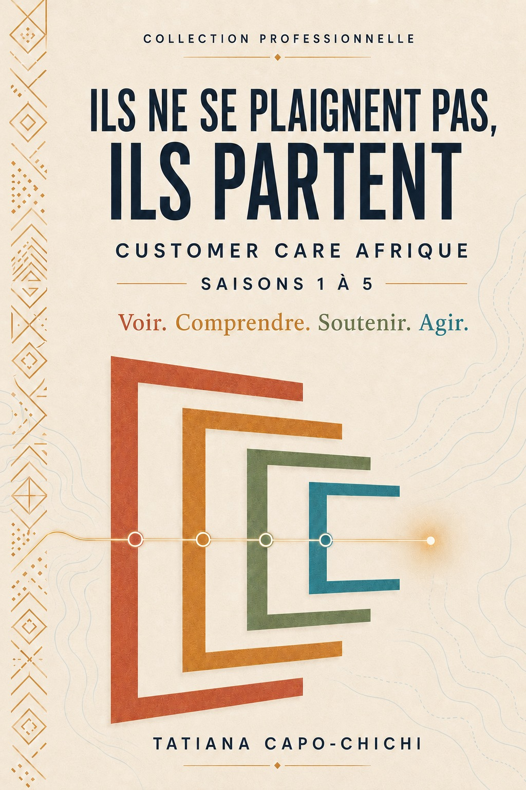
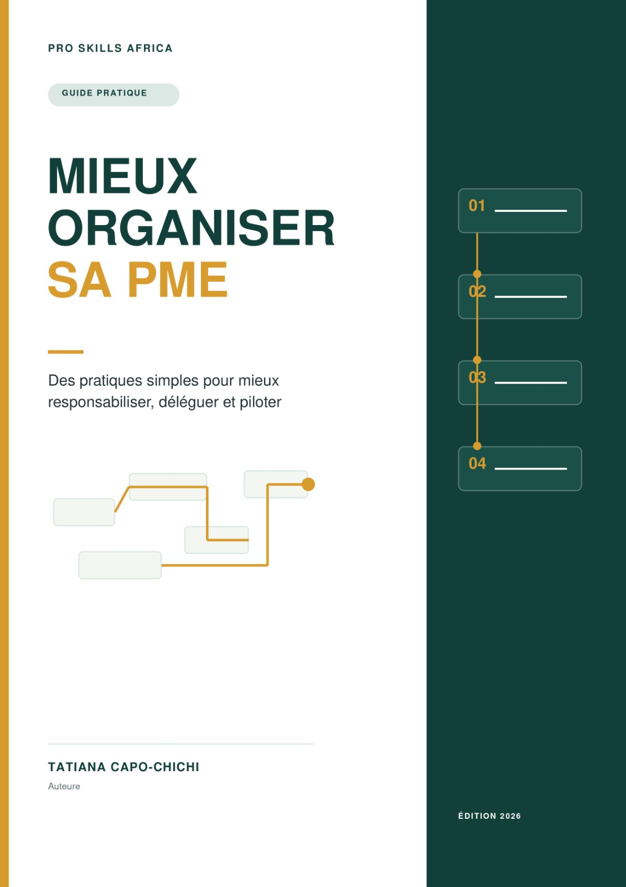
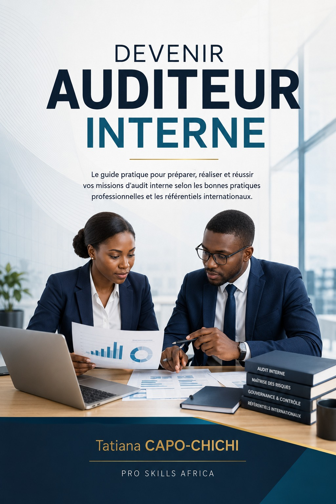
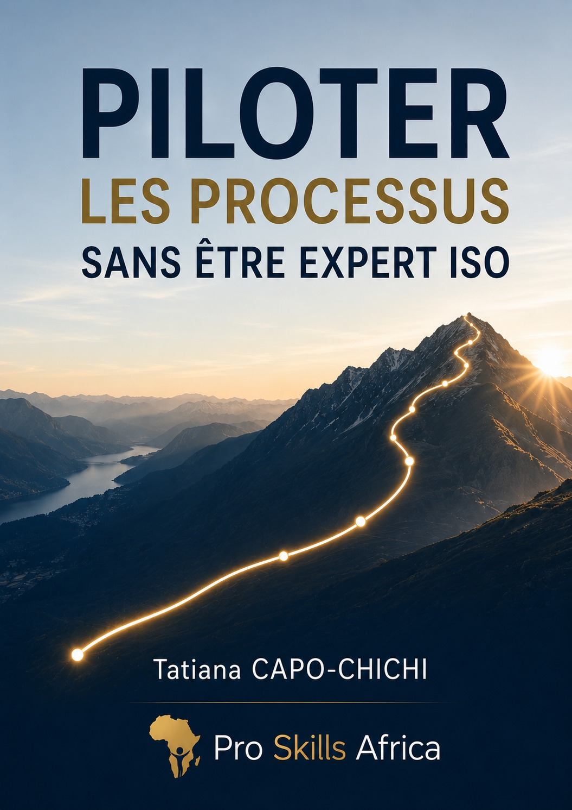
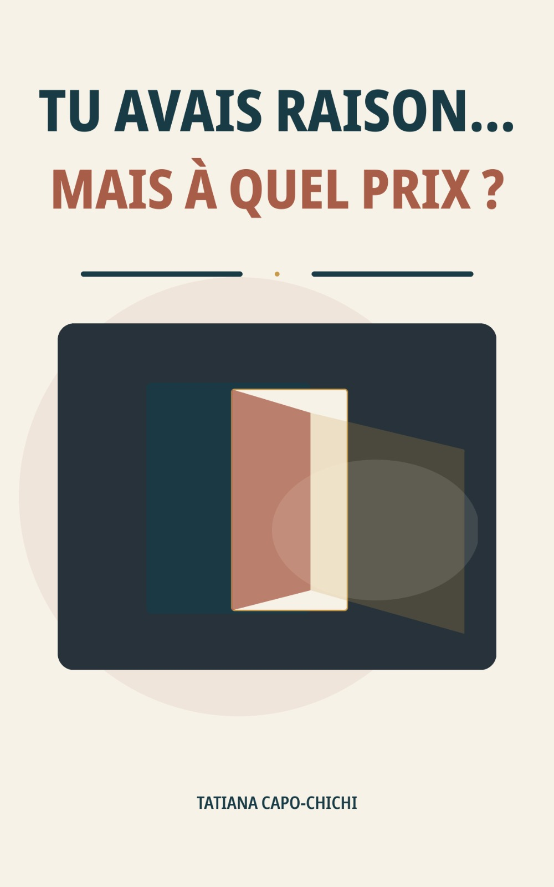

23 ans à accompagner des organisations d'Afrique francophone en QHSE, audit et certification ISO, et en capital humain — de l'analyse des risques à la structuration des équipes.
Consultante-experte, auditrice et formatrice certifiée, j'accompagne depuis 23 ans directions et équipes dans la structuration des systèmes de management, la mise en conformité réglementaire, la préparation à la certification, l'audit organisationnel et le développement des compétences. Mon approche allie la rigueur de l'audit à une lecture fine des enjeux humains : traduire un référentiel en dispositif opérationnel, ancré dans les réalités des organisations africaines — et non en documentation qui dort dans un tiroir.
Audits internes, diagnostics, audits à blanc, conformité réglementaire et préparation à la certification.
ISO 9001, ISO 14001, ISO 45001, ISO 21001, systèmes de management intégrés et amélioration continue.
Analyse des risques, exigences légales, maîtrise opérationnelle et actions correctives.
Audit RH, organisation, procédures, compétences, performance et accompagnement managérial.
Ingénierie pédagogique, formation d'adultes, simulations d'audit et évaluation des acquis.
Cartographies de processus, indicateurs, tableaux de bord, coaching et conduite du changement.
Pilotage de démarches de certification et de systèmes de management intégrés QSE ; audits de conformité, diagnostics, audits internes et à blanc ; structuration des processus et traitement des non-conformités ; conception et animation de formations ISO, audit et sécurité alimentaire.
OFMAS International — Bénin
Diagnostic initial et analyse des écarts multi-référentiels, structuration du système de management intégré, coordination du déploiement et accompagnement des pilotes de processus.
Loterie Nationale du Burkina Faso (LONAB)
Préparation de mission, analyse documentaire, audit sur site, identification des écarts et restitution.
ORYX Bénin S.A. — mission pour GZ Corporation
Vérification de conformité réglementaire, évaluation des pratiques environnementales et sécuritaires, contribution aux rapports d'audit.
OFMAS International
Formation à l'appropriation des exigences ISO 9001, 14001 et 45001, cas pratiques et mise en situation.
Intexpert Engineering — Côte d'Ivoire
Méthodologie d'audit, planification, conduite et évaluation des auditeurs.
JWHC & China Harbour Engineering (mission pour GZ Corporation)
Collecte d'informations sur site, analyse de conformité, identification des écarts et rédaction des rapports.
Société de Rizerie de Zogbodomé & Huilerie Calumet — Projet PAEB / ADPME
Diagnostic des pratiques, identification des risques sanitaires et des non-conformités ; formation aux BPH, élaboration de procédures d'hygiène et accompagnement des équipes.
Kékéli Efficient Power / Tagnon Afrique — Togo
Conception pédagogique, animation, simulations d'audit et évaluation des apprenants.
Groupe Mega Label, Bouygues Bénin, Port autonome de Cotonou, et 9 autres organisations
Audit des systèmes de management des ressources humaines et diagnostic organisationnel ; formalisation des procédures administratives et RH ; pilotage de la performance par indicateurs ; accompagnement des dirigeants et coaching individuel.
Cargo Bénin, IT NUM Bénin, Mark Horus, WACCS et Groupe Mega Label
Analyse de l'organisation, des responsabilités et des dispositifs de pilotage ; actualisation des manuels de procédures RH.
Fonds d'Aide à l'Alphabétisation / Alpha Stratégies et Fonds de Garantie Automobile (FGA Bénin)
Diagnostic des pratiques administratives et RH, formalisation des procédures et sécurisation des responsabilités.
Groupe Mega Label
FIFA Sainte Luce & Association des Femmes du Ministère de l'Économie et des Finances
Conception et animation d'activités de team building pour renforcer la cohésion, la communication et l'esprit d'équipe.
Banque Mondiale, UNFPA, FIDA, OMS, Enabel, Union européenne, PNLP, MCA Bénin — via GECA-Prospective / Leadership et Développement
Coordination de dispositifs de recrutement, sourcing et présélection, évaluation des candidatures, conduite d'entretiens, consolidation des résultats et aide à la décision, production de dossiers de recrutement — sur des missions financées par des bailleurs internationaux.
ISO 9001 · 14001 · 45001 · 21001 — PECB International
ISO 9001 · 14001 · 45001 — PECB International
ISO 19011:2018 — Best Conseils
Management des Ressources Humaines
Your safety is our aim — Votre sécurité, notre priorité
IFECARM Group est un cabinet de conseil spécialisé en Qualité, Hygiène, Sécurité, Sûreté, Énergie et Environnement, basé à Cotonou avec une présence internationale (siège également à Paris, France).
Au sein du groupe, j'occupe trois fonctions : Directrice Générale Afrique, Consulting Manager et Directrice Expertise-Conseils & Audits (DECA). Je pilote le développement stratégique, l'expertise et l'excellence QHSE des opérations africaines, je conduis les audits et diagnostics menés pour les clients du cabinet, et je conçois et anime moi-même les formations : Lead Auditor ISO 9001, 14001 et 45001, systèmes de management intégrés, audit interne, sécurité alimentaire et bonnes pratiques d'hygiène.
Le cabinet intervient au Bénin, au Togo, en Côte d'Ivoire, au Cameroun, au Sénégal, au Gabon, au Burkina Faso, au Congo, ainsi qu'en France et en Europe.
Des guides pratiques et des récits ancrés dans le quotidien professionnel africain — à lire, appliquer et partager en équipe.

Un ebook en 5 saisons narratives, ancré dans le quotidien des organisations africaines, pour apprendre à repérer les signaux faibles de l'insatisfaction client avant la rupture silencieuse — et agir avec des outils concrets.
« À huit heures vingt-sept, Amina pousse la porte vitrée d'une clinique privée d'Abidjan avec Mouhamed contre elle... Vous êtes bien enregistrés. Asseyez-vous, on va vous appeler. » — C'est ainsi que commence chaque rupture silencieuse : non pas dans un incident majeur, mais dans une attente inexpliquée.
Un guide de réflexion et d'action pour les femmes qui veulent prendre leur place, renforcer leur légitimité et exercer un leadership authentique sans renier leurs valeurs ni leurs racines.
« Sept heures dix, Douala. Clarisse relit une dernière fois la note qu'elle a préparée... Quatre femmes. Quatre villes. Aucune de ces décisions ne figurera dans un rapport annuel — et pourtant, chacune a fait exactement ce que fait un leader. »

Un guide pratique pour aider les dirigeants de PME à identifier leurs dysfonctionnements, clarifier leur organisation et construire un fonctionnement plus fiable, sans créer une bureaucratie inutile.
« Une commande inhabituelle ? On l'appelle. Un client mécontent ? On l'appelle... Cette situation apparaît souvent parce que l'activité a grandi plus vite que son organisation. »
Un guide pratique et inspirant pour dépasser la peur du jugement, retrouver confiance en sa voix et oser prendre la parole avec authenticité.
« Vous connaissez la réponse. Mieux encore : vous avez une idée... Le courage, c'est décider que votre voix mérite davantage d'espace que votre peur. »

Le guide pratique pour préparer, réaliser et réussir vos missions d'audit interne selon les bonnes pratiques professionnelles et les référentiels internationaux.

Une approche claire, concrète et accessible du pilotage des processus pour les managers, responsables opérationnels et dirigeants qui veulent obtenir de meilleurs résultats sans être spécialistes de l'ISO — mieux comprendre les interfaces, exploiter les bonnes informations et transformer les activités en résultats durables.
